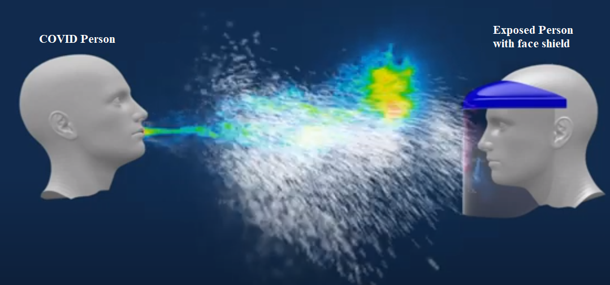

| Assignments | Points |
|---|---|
| Group Project - data visualization | 200 |
| Individual project 1 - EJ tool remix | 100 |
| Individual Project 2 - written critique (minimum 2 pages) | 100 |
| Individual Project 3 - data visualization | 100 |
| Presentation on EJ tools | 200 |
| Classroom participation | 100 |
| Final exam | 200 |
| Extra Credit | 50 |
Appendix A — Course Syllabus
A.1 Course Description
This is an introductory course on the theory and practice of effective communication with quantitative data. This course will introduce the theory of data visualization, discuss the ethics of data visualization, provide hands-on training in acquiring, tidying, and visualizing quantitative environmental data, and critically examine current environmental justice tools (CalEnviroScreen, EPA’s EJScreen, EPA’s EnviroAtlas).
A.2 Course Goals & Learning Objectives
Upon successful completion of this course, students will
- acquire critical thinking skills on the display of visual information
- improve team-based collaboration abilities by working on group projects
- know how to acquire, tidy, and summarize quantitative environmental datasets
- create graphs and maps in R
- critically review current environmental justice tools such as CalEnviroScreen and EJScreen
- understand basic theory and ethics of environmental data visualization
A.3 Student Learning Outcomes
Critical Thinking, Quantitative Reasoning, and Effective Expression - Upon completion of this course, student’s will be able to critically examine the elements of environmental data visualization, create effective maps and graphs of environmental data, and effectively communicate environmental ideas in a quantitative visual manner. It will also focus on the theory and ethics of data visualization with readings and critical analysis of existing environmental justice tools.
Social Justice Theory - This course will identify and quantitatively explore the unequal distribution and access to natural resources (Environmental Justice) within California and the United States. Students will critically examine the ways Environmental Justice is currently characterized by government agencies and describe the types of data visualization used to quantitatively identify areas of disproportional impact and understand the limitations of existing tools in promoting effective change.
A.4 Classroom Approach
In-person class time will include approximately 40% of time to devoted to lectures, 30% to hands-on coding and data visualization, and 30% to discussion.
A.5 Assignments and Activities
- Classroom participation during discussion sections
- Classroom participation during coding sessions
- Assigned reading (Tufte, news and peer-review articles, online books)
- Assigned review of web tools (CalEnviroScren, EJScreen, EnviroAtlas)
- Group coding projects
- Class presentation on an environmental data visualization
- Three individual projects displaying environmental data
- Group project displaying environmental data
- Final exam
A.6 Grading and Assessment Breakdown
The class will be based on a total of 1000 points.
- The group project displaying environmental data visualization will count for 200 points
- The three individual projects displaying or reviewing environmental data will count for 100 points each (300 in total).
- Remix of an environmental justice dataset from an existing EJ tool
- A written critique of an existing environmental data visualization
- A student proposed and executed environmental data visualization (map, figure, infographic, interactive tool)
- A presentation on environmental data visualization in Environmental Justice tools will count for 200 points
- Classroom participation will count for 100 points throughout the course of the semester.
- These points will be awarded for attendance and active participation in classroom discussion and coding sessions.
- Online attendance and participation will count towards this activity in case of sickness or inability to attend in-person.
- Missing classroom discussion and coding sessions can be made up for 80% credit within two weeks or 50% credit within four weeks by attending online or in-person office hours.
- These points will be awarded for attendance and active participation in classroom discussion and coding sessions.
- Final exam will count for 200 points. This will cover theory, ethics, and environmental justice.
- Extra credit - TBD
Students get a single free individual or group project that can be late by up to seven days from the due date. For the group project, if a member of the group has already used their individual free late project, the group cannot use other individual free periods. If any other project is late, scores will be reduced by 10% per day beyond the due date of the project.
The final exam and assigned presentation date require a doctor’s note for an excused absence. If unexcused, the student can make up the presentation or final exam for 75% credit within one week of the assigned date.
A.7 Office Hours
- Mondays 9 AM - 11 AM on Pitzer Zoom
- Fridays 9:00-9:30 and 11:00 - 11:30 AM (before and after class) - Redford Conservancy
A.8 COVID policy
COVID-19 safety guidelines and recommendations continue to evolve. Please read Pitzer’s Community Messages and FAQs and visit the Student Health Services (SHS) COVID page for the latest campus information and guidance.

I will be wearing a mask in any indoor environment with others around. All applicable campus and LA County policies will apply in this class and I will follow them to the extent feasible. If mask wearing is optional under Pitzer and LA County guidelines, then it is in this classroom as well. If you need to sneeze, cover up with an elbow…
If we do have a COVID breakout or otherwise require hybrid/remote class environments through Zoom, I will post meeting links via email.
A.9 Readings
The theory of environmental data visualization will use selected readings assigned to students. Every other class will involve a discussion of an assigned reading or analysis of an environmental data visualization.
Assigned readings will include selections from books, peer-review journal articles, websites, and newspaper articles. A selection of readings that are likely to be discussed in the course includes:
- Selections from Tufte’s book ‘The Visual Display of Quantitative Information’ (Tufte 2001)
- Selections from Tufte’s book ‘Envisioning Information’ (Tufte 2013)
- Selections from Hadley Wickham’s “Grammar of Graphics” with ggplot2, shiny, and other R packages. (Wickham et al. 2019)
- A selection of Peer-review journal articles listed in the references below. (Horton, Nowak, and Haegeli 2020; Kelleher and Wagener 2011; van Beek et al. 2020; Gommeh, Dijstelbloem, and Metze 2021; Murchie and Diomede 2020; Grainger, Mao, and Buytaert 2016)
- Newspaper articles such as the LA Times article by Professor Phillips on Inland Empire Warehouse growth (Facebook et al. 2022)
- Readings on the meaning, use, and technical limitations of Environmental Justice tools